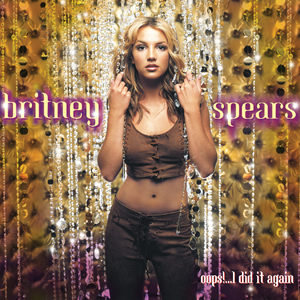
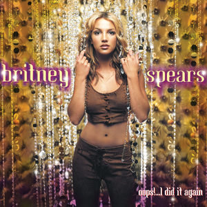
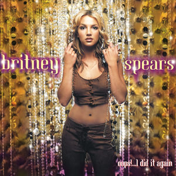

| Britney Spears Albums Tier List | |
|---|---|
| S | |
| A |  |
| B |    |
| C | |
Links a sus redes y página web


Britney Jean Spears (nacida el 2 de diciembre de 1981) es una cantante, compositora y bailarina estadounidense.
A menudo conocida como la "princesa del pop", se le atribuye haber influido en el renacimiento del pop adolescente a fines de la década de 1990 y principios de la de 2000.
Considerada como un ícono pop, Spears ha vendido casi 150 millones de discos en todo el mundo, incluidos más de 70 millones únicamente en los Estados Unidos, lo que la convierte en una de las artistas musicales más vendidas del mundo.
En el 2008 se estrenó el que es hasta el momento su único documental, titulado "Britney: For The Record"
Este es el trailer:
Esta es mi tier list de los álbumes de estudio que lanzó hasta el momento:
| Britney Spears Albums Tier List | |
|---|---|
| S | |
| A | |
| B |  |
| C | |
Links a sus redes y página web